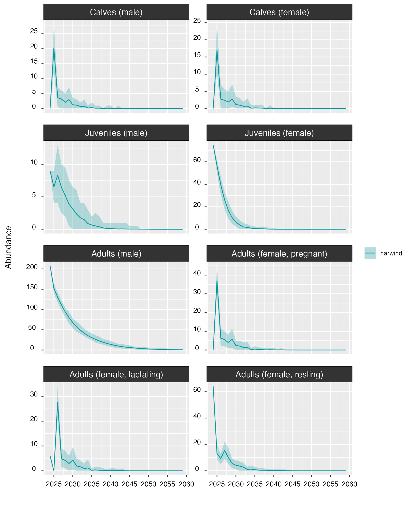

Getting started with narwind
Phil Bouchet, Enrico Pirotta, Len Thomas, Catriona Harris
Centre for Research into Ecological & Environmental Modelling, University of St Andrews2024-01-31
narwind.RmdPreamble
The narwind R package provides methods to forecast the
population size of critically endangered North Atlantic right whales
(NARW, Eubalaena glacialis) under user-defined offshore wind
development scenarios. narwind offers an implementation
PCoMS1
framework; it is built around a spatially-explicit bioenergetic model,
in which the movements of different population cohorts (i.e., juveniles,
adult males, pregnant females, resting females, lactating females and
their dependent calves) are simulated throughout a full calendar year,
and the energy budgets of individual animals are monitored in the
context of potential disturbance from anthropogenic activities. Insights
gained from the simulator are then used to predict NARW abundance over a
time horizon relevant to management (e.g., 25–50 years, consistent with
the expected lifespan of a typical wind farm) using a stochastic
population model. The spatial simulation operates in daily time steps
and accounts for the effects of multiple stressors known or presumed to
affect NARW health, reproduction, and survival, namely: (1) direct
mortality from vessel strikes, (2) short-term cessation of foraging
activity following exposure to pile-driving noise during wind farm
construction, and (3) mortality and increased energy expenditure
resulting from entanglement in fishing gear.
This vignette is a step-by-step tutorial designed to showcase the
main features of narwind.
Note: Model calibration is still ongoing as of January 31, 2024. The model outputs presented below are therefore provisional and only shown for instructional purposes; results should not presently be used to make inferences about wind farm effects on right whale population size.
Package installation
The latest development version of the package can be downloaded from the GitHub. This requires either the remotes or the devtools package to be pre-installed.
# To install the remotes package, run the following command:
install.packages("remotes")
# To install the devtools package, run the following command:
install.packages("devtools")Note: In R, comments are indicated by a hash
#sign and usually appear grayed out (or in a different color to the code itself). Comments represent generic sentences that are mostly used for the purposes of documentation (e.g., to keep a record of what a piece of code does), and are ignored by the program.
# Once either of the above packages is installed,
# narwind can be downloaded using the <install_github> command
remotes::install_github("offshore-wind/narwind") # OR
devtools::install_github("offshore-wind/narwind")Note that the package relies on compiled code (C++) and functionality
provided by the Rcpp
package. The Rtools software may be needed on Windows
machines.
Installation instructions can be found here.
Overview
This vignette covers all the steps required to run the bioenergetic model and make predictions of right whale population trends. This includes:
- Loading the package.
- Defining bespoke offshore wind scenarios using an interactive Shiny web app.
- Running simulations using the
narw()function. - Inspecting outputs using the
print()method. - Generating summary statistics, simulation diagnostics, and maps
using the
summary()andplot()methods. - Propagating uncertainty from survival and health models using the
augment()function. - Forecasting population size using the
predict()method. - Visualizing population trends using the
plot()method. - Saving model outputs to disk using the
write()method.
Spatial data
narwind implements a spatially-explicit bioenergetic
model which is informed by several raster surfaces relating to key model
parameters, namely:
| Raster | Resolution | Derived from | Source(s) / Data providers |
|---|---|---|---|
| Strike risk | Monthly (10x10 km) | Records of sea-going vessel movements as captured by Automatic Identification Systems (AIS) | NOAA Fisheries (U.S. waters), MERIDIAN (Canadian waters) |
| Entanglement risk | Monthly (5x5 km) | Risk estimates from NOAA’s Decision Support Tool, complemented by a comparative analysis of fishing effort within northern U.S. vs. Canadian waters | NOAA Fisheries (U.S. waters), North Atlantic Fisheries Organization (Canadian waters) |
| Pile-driving noise | Daily (5x5 km) | Simple acoustic propagation model, which assumes that transmission loss is dependent on log-range and frequency-specific absorption | - |
| Prey concentration | Monthly (10x10 km) | Predictions from a depth-integrated species distribution model for Calanus finmarchicus, Calanus hyperboreus, and Calanus glacialis | Fisheries and Oceans Canada |
| Right whale density | Monthly (5x5 km) | Predictions from density surface models developed from shipboard and aerial survey data | Duke University (MGEL) |
Further information on each of these inputs can be found under the Articles menu.
The package contains all the surfaces required to undertake an assessment of NARW abundance under three hypothetical offshore wind development scenarios (see below), as well as under baseline conditions in the absence of wind farm construction activities.
Package workflow
A typical workflow, as described in the Example analysis below, consists of five steps (Figure 1):
- Defining the parameters of one or more target offshore wind
scenario(s) using the
scenario()function. - Running simulations using the
narw()function, including in the absence of wind farm development activities (i.e., baseline conditions, if relevant). - Inspecting, visualizing, and summarizing model outputs using the
summary(),plot(), andprint()methods. - Estimating uncertainty associated with health and survival
functions, to be propagated into population projections [optional] using
the
augment()function. - Forecasting right whale abundance using the
predict()method. - Optionally, using the
write()method to export data for further analysis/reporting.
narwind workflow. Package
functions and object classes are indicated in coloured font.Example analysis
Loading the package
The first step is to load the package. This is done using the
library() command, which prints a welcome message with
basic information in the R console:
library(narwind)Note:
narwindis largely written in C++, a high-level, general-purpose programming language often used in high-performance applications. C++ is a compiled language, meaning that any source code must first be converted into machine-readable code before execution. This compilation process results in an executable file, which is then translated into R functions. No user input is necessary; this step is automatically performed in the background as part of thelibrary()call above.
Note: In R, the
help()function and?help operator provide access to documentation pages for package functions, datasets, or other objects. To access documentation for thenarw()function, for instance, enter any of the commands:help(narw),help("narw"),?narw, or?"narw"(i.e., the quotes are optional).
Defining offshore wind scenarios
The package ships with three preset offshore wind scenario objects,
which summarize different phases of development at two sites off the
Southern New England coast and a third off the Virginia coast (Figure
2). These are provided as objects of class narwscenario
(scenario_01, scenario_02, and
scenario_03).

narwind scenarios.Note: Throughout this document, we refer to the R objects describing construction or operation activities as scenarios. Multiple scenarios (e.g., relating to successive phases of development) together form a scenario bundle.
Scenario 1 (Construction phase – “unmitigated” case)
This scenario entails the synchronous construction of all three wind farms at times coinciding with expected peaks in right whale abundance within each respective area (Jan–April in SNE, Jan–March in VA; Figure 3). The objective of this scenario is to explore the potential for cumulative effects of multiple installation activities under unmitigated conditions.
Scenario 2 (Construction phase – “mitigated” case)
This scenario involves shutdowns of installation operations during the main right whale foraging/calving seasons (Nov–Apr). Construction resumes in May at the southward site (Farm 3) and during the late summer to early fall at sites 1 and 2 off New England (Figure 3). In addition, activities at each of the two SNE farms are asynchronous, with noise abatement systems in place to limit noise impacts. Note that a subset of only 60 monopiles are driven at Farm 1 in order to align with Southall et al. (2021).
Scenario 3 (Operation & maintenance)
In this scenario, we assume that all three wind farms are in simultaneous and continuous operation (Figure 3). The primary footprint for operations is taken to be vessel traffic to and from wind farm sites; we do not consider vessel movements within farm areas.
As can be seen below, narwscenario objects consist of
several elements:
phase: A numeric variable parameter indicating the phase of development (0for baseline,1for construction,2for operations & maintenance).locs: A table listing the coordinates of individual wind turbines for each wind farm site. Optionally,locsmay also contain piling dates for each foundation.routes: Spatial lines shapefile representing vessel routes to each wind farm site.vessels: A table summarizing the nominal travel speed (in knots), fleet size, and numbers of round trips per foundation for wind farm site, vessel route, and vessel class.start.month: A integer vector indicating the month of construction start (1 = January, 12 = December) for each wind farm site. Only relevant if piling dates are not provided in thelocstable.start.day: A integer vector indicating the day of construction start (1 = 1st, 15 = 15th) for each wind farm site. Only relevant if piling dates are not provided in thelocstable.piles.per.day: An integer indicating the number of turbines being installed each day.ambient: An integer defining the ambient noise level (in dB).sourceLvL: An integer defining the source level (dB) of the hammer strikes; this is assumed to correspond to the exact locations of the turbines, as listed inlocs.lowerdB: An numeric value defining the magnitude of noise attenuation achieved when noise abatement systems are in place (e.g., bubble curtains).logrange: Log-range coefficient used in the transmission loss model.absorb: Absorption coefficient used in the transmission loss model.
str(scenario_01,1)
#> List of 12
#> $ phase : num 1
#> $ locs :Classes 'data.table' and 'data.frame': 250 obs. of 6 variables:
#> ..- attr(*, ".internal.selfref")=<externalptr>
#> $ routes :List of 3
#> $ vessels :Classes 'data.table' and 'data.frame': 35 obs. of 9 variables:
#> ..- attr(*, "spec")=
#> .. .. cols(
#> .. .. phase = col_factor(levels = NULL, ordered = FALSE, include_na = FALSE),
#> .. .. vesselclass = col_factor(levels = NULL, ordered = FALSE, include_na = FALSE),
#> .. .. site = col_factor(levels = NULL, ordered = FALSE, include_na = FALSE),
#> .. .. windfarm = col_integer(),
#> .. .. route = col_integer(),
#> .. .. speed_knt = col_integer(),
#> .. .. Nvessels = col_integer(),
#> .. .. roundtrips_foundation = col_double()
#> .. .. )
#> ..- attr(*, "problems")=<externalptr>
#> ..- attr(*, ".internal.selfref")=<externalptr>
#> $ start.month : num [1:3] 1 2 1
#> $ start.day : num [1:3] 15 1 1
#> $ piles.per.day: num 1
#> $ ambient : num 80
#> $ sourceLvL : num 220
#> $ lowerdB : num 0
#> $ logrange : num 15
#> $ absorb : num 1.18
#> - attr(*, "class")= chr [1:2] "narwscenario" "list"The above parameters can be defined interactively to generate
entirely bespoke scenarios using the Shiny app available though the
scenario() function. A full tutorial detailing the use of
the app can be found in a sister vignette (soon to be released).
Running the model
The bioenergetic model is run by calling the narw()
function. The number of simulated animals per cohort, nsim,
is the only mandatory argument; all others are optional and set to
default values that reflect baseline conditions when no wind farm
activity is occurring. narwscenario objects pulled from the
Shiny app can be passed to narw() using the
scenario argument.
As an example, the code below can be used to simulate 100 individuals in each population cohort under baseline conditions.
m <- narw(nsim = 100)Note: This took 11 min 47 sec to run on a 2021 iMac (M1) running Mac OS Sonoma 14.1.2. However, run times may vary between operating systems.
The arguments that can be passed to narw() are listed
below.
| Argument | Default value | Description |
|---|---|---|
nsim |
1000 |
Positive integer. Number of simulated animals. |
scenario |
NULL |
An optional object of class narwscenario, as returned
by the scenario() function. |
pair |
NULL |
An object of class narwsim, to which the current
simulation must be matched. With the exception of wind farm parameters,
simulation conditions between paired runs are identical; pairing is
therefore useful to enable comparative assessments of population
projections under competing offshore wind scenarios. |
label |
"" |
Character. Text label assigned to the simulation object; used for plotting. |
piling.hrs |
4 |
Numeric. Length of time (hours) during which whales cease foraging following a response to pile-driving noise exposure. |
n.cores |
NULL |
Positive integer. Number of CPU cores to use for parallel
processing. The default value of NULL detects the processor
configuration and runs computations on the maximum allowable number of
available cores. |
The resulting object is of class narwsim:
class(m)[1]
#> [1] "narwsim"Pairing simulations
It is important to note that the bioenergetic model is stochastic,
such that successive runs of the model will return different results
(e.g., different simulated movement tracks for each animal). However,
meaningful comparisons of population projections between contrasting
offshore wind scenario bundles are only possible if simulated conditions
are maintained between model runs. The pair argument was
designed to enable this using random seed matching, and allows users to
supply an existing narwsim object that can act as a
“template” for the current simulation (Figure 4).
For instance, the code below performs another run of the model with
piling taking place at three sites as defined in the
scenario_01 object (Figure 2). The run is paired with the
baseline scenario stored in m. With the exception of wind
farm-related parameters, all simulated conditions are identical between
m and m2.
m2 <- narw(nsim = 50, scenario = scenario_01, pair = m)
m3 <- narw(nsim = 50) # Compare to an additional baseline run with no pairing
Viewing data
Outputs from the narw() simulator can be viewed in the R
console using the print() method. print() is
part of a group of generic functions that can be applied to various R
objects and will behave differently depending on the class of the object
that is passed to them. Other generic functions include
plot(), summary(), or write()
(among others) – these are covered in later sections.
print() can also be called implicitly, that is, simply by
typing the name of the relevant object in the console and pressing
[enter] on the keyboard. The default behavior for objects
of class narwsim as returned by narw() is to
give a tabular overview of the data from the first 5 days of the
simulation, for the first animal in each population cohort. Optional
arguments allow users to override these default settings and display
data for specific days, animals, and/or cohorts. The
print() method has the following arguments:
| Argument | Default value | Description |
|---|---|---|
obj |
- |
Input model object of class narwsim, as returned by
narw(). |
rowID |
1:5 |
Positive integer or vector of positive integers indicating which days of the simulation should be displayed. Defaults to the first first days. |
whale |
1 |
Positive integer indicating the individual for which data should be extracted. Only the first individual is included by default. |
cohort |
1:6 |
Positive integer or vector of positive integers indicating which
cohorts should be considered. Defaults to all cohorts. Cohort
identifiers are listed in an object called cohorts. Note
that calves are included with their mothers (i.e.,
cohort = 5). |
For example, the code below displays the first 5 days of the simulation for the fourth adult male.
print(m, rowID = 1:5, whale = 4, cohort = 3)
#>
#>
#>
#> =========================================================================================
#> Adults (male)
#> =========================================================================================
#>
#> --------------------------
#> Locations
#> --------------------------
#>
#> whale day date easting northing region resid_m resid_sd pleave
#> 1: 4 1 01-10 605.5000 831.5000 SNE 20.4 1.1 0
#> 2: 4 2 02-10 590.5175 834.6409 SNE 20.4 1.1 0
#> 3: 4 3 03-10 593.5212 823.2677 SNE 20.4 1.1 0
#> 4: 4 4 04-10 588.7098 817.7874 SNE 20.4 1.1 0
#> 5: 4 5 05-10 595.2244 817.4389 SNE 20.4 1.1 0
#>
#> --------------------------
#> Attributes
#> --------------------------
#> whale day cohort gsl seus alive age bc length length_a
#> 1: 4 1 3 1 0 1 48.83200 0.3074689 13.62678 1362.755
#> 2: 4 2 3 1 0 1 48.83474 0.3070702 13.62678 1362.755
#> 3: 4 3 3 1 0 1 48.83748 0.3066648 13.62678 1362.755
#> 4: 4 4 3 1 0 1 48.84022 0.3062777 13.62678 1362.755
#> 5: 4 5 3 1 0 1 48.84296 0.3058729 13.62678 1362.755
#> length_b length_c mass leanmass fatmass mass_a mass_b mouth_r
#> 1: -0.37 -0.18 26554.09 18389.53 8164.557 -4.834189 2.984353 0.1482461
#> 2: -0.37 -0.18 26538.82 18389.54 8149.280 -4.834189 2.984353 0.1482461
#> 3: -0.37 -0.18 26523.30 18389.54 8133.762 -4.834189 2.984353 0.1482461
#> 4: -0.37 -0.18 26508.50 18389.54 8118.962 -4.834189 2.984353 0.1482461
#> 5: -0.37 -0.18 26493.04 18389.54 8103.504 -4.834189 2.984353 0.1482461
#> mouth_a mouth_w abort starve died date_died p_surv
#> 1: 76.7 2.020117 0 0 0 0 1
#> 2: 76.7 2.020117 0 0 0 0 1
#> 3: 76.7 2.020117 0 0 0 0 1
#> 4: 76.7 2.020117 0 0 0 0 1
#> 5: 76.7 2.020117 0 0 0 0 1
#>
#> --------------------------
#> Stressors
#> --------------------------
#>
#> whale day gear_risk is_entgl entgl_head entgl_sev entgl_d entgl_start
#> 1: 4 1 0.0003928734 0 0 0 0 0
#> 2: 4 2 0.0004807485 0 0 0 0 0
#> 3: 4 3 0.0002767621 0 0 0 0 0
#> 4: 4 4 0.0003692962 0 0 0 0 0
#> 5: 4 5 0.0003182602 0 0 0 0 0
#> entgl_end is_entgl_calf entgl_head_calf entgl_sev_calf entgl_d_calf
#> 1: 0 0 0 0 0
#> 2: 0 0 0 0 0
#> 3: 0 0 0 0 0
#> 4: 0 0 0 0 0
#> 5: 0 0 0 0 0
#> entgl_start_calf entgl_end_calf strike_risk strike strike_calf noise_resp
#> 1: 0 0 0 0 0 0
#> 2: 0 0 0 0 0 0
#> 3: 0 0 0 0 0 0
#> 4: 0 0 0 0 0 0
#> 5: 0 0 0 0 0 0
#> noise_lvl dB_thresh
#> 1: 0 0
#> 2: 0 0
#> 3: 0 0
#> 4: 0 0
#> 5: 0 0
#>
#> --------------------------
#> Activity budgets
#> --------------------------
#>
#> whale day d_travel swimspeed glide glide_feed glide_echelon t_travel
#> 1: 4 1 15.308182 0.4362719 0.09548216 0.2122222 0 9.746841
#> 2: 4 2 11.763092 0.5867546 0.09580268 0.5034039 0 5.568811
#> 3: 4 3 7.292765 0.2015919 0.09530025 0.3808557 0 10.048854
#> 4: 4 4 6.523927 0.7087248 0.09240483 0.3572311 0 2.556990
#> 5: 4 5 11.780559 0.5843444 0.11241783 0.3440076 0 5.600083
#> t_feed t_rest_nurse
#> 1: 0 14.25316
#> 2: 0 18.43119
#> 3: 0 13.95115
#> 4: 0 21.44301
#> 5: 0 18.39992
#>
#> --------------------------
#> Growth
#> --------------------------
#>
#> whale day delta_fat EDlip EDpro lip_anab lip_catab perc_muscle perc_viscera
#> 1: 4 1 -16.98626 39.539 23.64 0.8 0.8 0.5537975 0.2009494
#> 2: 4 2 -15.27719 39.539 23.64 0.8 0.8 0.5537975 0.2009494
#> 3: 4 3 -15.51873 39.539 23.64 0.8 0.8 0.5537975 0.2009494
#> 4: 4 4 -14.79983 39.539 23.64 0.8 0.8 0.5537975 0.2009494
#> 5: 4 5 -15.45744 39.539 23.64 0.8 0.8 0.5537975 0.2009494
#> perc_bones
#> 1: 0.2452532
#> 2: 0.2452532
#> 3: 0.2452532
#> 4: 0.2452532
#> 5: 0.2452532
#>
#> --------------------------
#> Energy balance
#> --------------------------
#>
#> whale day E_tot E_in E_out
#> 1: 4 1 -537.2958 0 537.2958
#> 2: 4 2 -483.2358 0 483.2358
#> 3: 4 3 -490.8761 0 490.8761
#> 4: 4 4 -468.1364 0 468.1364
#> 5: 4 5 -488.9372 0 488.9372
#>
#> --------------------------
#> Energy intake
#> --------------------------
#>
#> whale day feed preyconc minprey gape feedspeed captEff impedance
#> 1: 4 1 0 0.1459147 0.4686015 2.698368 0.4362719 0.91575 0
#> 2: 4 2 0 0.2088843 0.4686015 2.698368 0.5867546 0.91575 0
#> 3: 4 3 0 0.1812733 0.4686015 2.698368 0.2015919 0.91575 0
#> 4: 4 4 0 0.1777585 0.4686015 2.698368 0.7087248 0.91575 0
#> 5: 4 5 0 0.1920669 0.4686015 2.698369 0.5843444 0.91575 0
#> feed_effort eta_lwrBC eta_upprBC targetBC cop_mass cop_kJ digestEff
#> 1: 0.9720419 10 30 0.41718 0.001670151 0.02391922 0.94
#> 2: 0.9725672 10 30 0.41718 0.001670151 0.02391922 0.94
#> 3: 0.9730333 10 30 0.41718 0.001670151 0.02391922 0.94
#> 4: 0.9735007 10 30 0.41718 0.001670151 0.02391922 0.94
#> 5: 0.9739406 10 30 0.41718 0.001670151 0.02391922 0.94
#> metabEff_juv metabEff_ad E_cop
#> 1: 0.7403977 0.875 0.004762958
#> 2: 0.7403977 0.875 0.004762958
#> 3: 0.7403977 0.875 0.004762958
#> 4: 0.7403977 0.875 0.004762958
#> 5: 0.7403977 0.875 0.004762958
#>
#> --------------------------
#> Energetic costs
#> --------------------------
#>
#> whale day E_out rmr LC scalar_LC stroke stroke_feed
#> 1: 4 1 537.2958 461.4070 75.865741 1 0.11767379 0.1657861
#> 2: 4 2 483.2358 461.4070 21.805709 1 0.10679613 0.1722876
#> 3: 4 3 490.8761 461.4071 29.445972 1 0.13005281 0.1668962
#> 4: 4 4 468.1364 461.4071 6.706255 1 0.05179131 0.1609393
#> 5: 4 5 488.9372 461.4071 27.507052 1 0.13819525 0.1636449
#> E_growth
#> 1: 0.02309301
#> 2: 0.02308162
#> 3: 0.02307024
#> 4: 0.02305887
#> 5: 0.02304751
# By contrast, the below will show all data
m # Same as print(m)Note: The
print()method is only used for viewing data inside the R console. To export / save data on disk, use thewrite()method described in the Exporting data section.
Model summary and diagnostics
The summary() method provides a range of diagnostics
that are helpful for assessing whether simulated whale behavior aligns
with biological expectations. These relate to individual (1) health, (2)
movements, (3) habitat use, (4) behavior (i.e., activity budgets), (5)
stressor exposure, and (6) energy intake vs. expenditure (see Table 1
below).
The function takes the following arguments:
| Argument | Default value | Description |
|---|---|---|
obj |
- |
Model object of class narwsim, as returned by
narw(). |
what |
"all" |
Character string indicating which component(s) of the summary to
display. Can be one of: "health", "movements",
"habitat", "behavior",
"stressors", "strike", "gear",
"noise", "other", or "energy".
See below for details. Defaults to "all" for a complete
summary. |
relative |
FALSE |
Logical. If TRUE, percentages are calculated relative
to class totals. Defaults to FALSE. |
plot |
FALSE |
Logical. If TRUE, plots are produced in addition to a
text-based summary. |
whale |
1:nsim |
Positive integer indicating the individual for which data should be
extracted. By default, considers all nsim individuals. |
cohort |
1:6 |
Positive integer or vector of positive integers indicating which
cohorts should be considered. Defaults to all cohorts. Cohort
identifiers are listed in an object called cohorts. |
| Category | Component | Plots | Details |
|---|---|---|---|
health |
Mortality | No | Whale mortality by region, cohort, and cause of death (i.e., starvation vs. vessel strike) . |
| Pregnancy | No | Observed abortion rate in females that started the simulation in a pregnant state. | |
| Births | No | Mean (range) date of calving events. | |
| Body condition | Yes | Time series of individual body condition (expressed as relative fat mass), by cohort. | |
| Growth | Yes | Growth curves, by cohort. | |
movements |
Locations | No | Breakdown of (daily) locations by cohort, region, and country (U.S. vs. Canada). |
| Destinations | No | Comparison of assigned vs. realized migratory destinations both within and across cohorts. Migratory endpoints include the Southeastern United States calving grounds (SEUS) and Canadian feeding grounds in the Gulf of St Lawrence (GSL). | |
| Step lengths | Yes | Summary of daily movements, reported as mean (± SD, range) distances traveled per day, by cohort. Distributions of daily step lengths are also visualized by region and as a whole. | |
| Migration | No | Summary of yearly movements, reported as mean (± SD, range) total distance covered over the time span of the simulation, by cohort. | |
habitat |
Occupancy | No | Cohort-specific summary of the numbers of animals visiting each region, and the number of regions visited by animals. |
| Residency | No | Breakdown of days spent in each. | |
behavior |
Activity budgets | Yes | Mean (± SD) hours spent engaging in each of the four categories of behavior considered in the model (i.e., traveling, resting, nursing, and feeding), by region. A visual breakdown by region is also produced for each category of behavior. |
stressors |
Entanglements (gear) |
Yes | Various summaries by cohort, including: entanglement rates, durations, severities, probabilities, and attachment sites along the body. |
Vessel strikes (strike) |
No | Strike rates by cohort. | |
Noise (noise) |
No | Summary of mean (± SD, range) noise levels encountered, behavioral response thresholds, and numbers of days during which a response to pile-driving was observed. | |
Other sources of mortality (other) |
No | Summary of mortality from other sources, by cohort. | |
| Energy | Energy budget | No | Mean (± SD, range) daily energy intake and expenditure (expressed in MJ/day), by cohort. Also reported are the mean (± SD, range) % time individuals are in energetic deficit (energy balance < 0) or surplus (energy balance > 0). |
# Summary for adult females only
summary(m, cohort = 4:6)
#> -------------------------------------------------------------
#> -------------------------------------------------------------
#>
#> NORTH ATLANTIC RIGHT WHALE (Eubalaena glacialis)
#>
#> *** PCoMS MODEL SUMMARY ***
#>
#> -------------------------------------------------------------
#> -------------------------------------------------------------
#>
#> BOF: Bay of Fundy (lower, upper)
#> CABOT: Cabot Strait
#> CCB: Cape Cod Bay
#> GOM: Gulf of Maine and Georges Bank
#> GSL: Gulf of St Lawrence
#> MIDA: Mid-Atlantic
#> SCOS: Scotian Shelf
#> SEUS: South-east United States
#> SNE: Southern New England
#>
#> =============================================================
#> SIMULATIONS
#> =============================================================
#>
#> No. animals: 100
#>
#> Cohort(s)
#> ----------
#> ad(f,p): Adults (female, pregnant)
#> ad(f,l): Adults (female, lactating)
#> ad(f,r): Adults (female, resting)
#>
#> Simulation start: October
#>
#> =============================================================
#> HEALTH
#> =============================================================
#>
#> +++++++++++ Mortality +++++++++++
#>
#> cohort alive dead
#> --------------------------- ----------- -----------
#> Adults (female, resting) 74.0% (74) 26.0% (26)
#> Adults (female, lactating) 48.0% (48) 52.0% (52)
#> Adults (female, pregnant) 81.0% (81) 19.0% (19)
#> Calves (male, female) 40.0% (40) 60.0% (60)
#>
#> +++++++++++ Mortality (by source) +++++++++++
#>
#> cohort cause_death N
#> -------- ---------------- -----------
#> ad(f,r) other 25.0% (25)
#> ad(f,r) starve 1.0% (1)
#> ad(f,l) starve 38.0% (38)
#> ad(f,l) other 14.0% (14)
#> ad(f,p) other 17.0% (17)
#> ad(f,p) strike 2.0% (2)
#> ad(ml) other 22.0% (22)
#> ad(ml) strike 3.0% (3)
#> ad(ml) starve 1.0% (1)
#> jv(fml) other 22.0% (22)
#> jv(fml) starve 3.0% (3)
#> jv(ml) other 22.0% (22)
#> jv(ml) starve 3.0% (3)
#> jv(ml) strike 2.0% (2)
#> c(m,f) starve (female) 38.0% (38)
#> c(m,f) none (female) 8.0% (8)
#> c(m,f) other (female) 14.0% (14)
#>
#> +++++++++++ Mortality (by region) +++++++++++
#>
#> region cause_death ad(f,r) ad(f,l) ad(f,p) ad(ml) jv(fml) jv(ml) c(m,f)
#> ------- -------------- ---------- ---------- --------- --------- --------- --------- ----------
#> GOM none (female) 0.0% (0) 0.0% (0) 0.0% (0) 0.0% (0) 0.0% (0) 0.0% (0) 3.0% (3)
#> GSL none (female) 0.0% (0) 0.0% (0) 0.0% (0) 0.0% (0) 0.0% (0) 0.0% (0) 3.0% (3)
#> SNE none (female) 0.0% (0) 0.0% (0) 0.0% (0) 0.0% (0) 0.0% (0) 0.0% (0) 2.0% (2)
#>
#>
#> region cause_death ad(f,r) ad(f,l) ad(f,p) ad(ml) jv(fml) jv(ml) c(m,f)
#> ------- ------------ ----------- ---------- --------- --------- --------- --------- ----------
#> CABOT other 1.0% (1) 1.0% (1) 1.0% (1) 1.0% (1) 1.0% (1) 0.0% (0) 0.0% (0)
#> GOM other 6.0% (6) 5.0% (5) 8.0% (8) 6.0% (6) 9.0% (9) 8.0% (8) 0.0% (0)
#> GSL other 10.0% (10) 2.0% (2) 3.0% (3) 6.0% (6) 8.0% (8) 6.0% (6) 0.0% (0)
#> MIDA other 0.0% (0) 0.0% (0) 0.0% (0) 1.0% (1) 1.0% (1) 0.0% (0) 0.0% (0)
#> SCOS other 0.0% (0) 0.0% (0) 1.0% (1) 1.0% (1) 0.0% (0) 2.0% (2) 0.0% (0)
#> SEUS other 0.0% (0) 0.0% (0) 0.0% (0) 0.0% (0) 0.0% (0) 1.0% (1) 0.0% (0)
#> SNE other 8.0% (8) 6.0% (6) 4.0% (4) 7.0% (7) 3.0% (3) 5.0% (5) 0.0% (0)
#>
#>
#> region cause_death ad(f,r) ad(f,l) ad(f,p) ad(ml) jv(fml) jv(ml) c(m,f)
#> ------- --------------- ---------- ---------- --------- --------- --------- --------- ----------
#> CABOT other (female) 0.0% (0) 0.0% (0) 0.0% (0) 0.0% (0) 0.0% (0) 0.0% (0) 1.0% (1)
#> GOM other (female) 0.0% (0) 0.0% (0) 0.0% (0) 0.0% (0) 0.0% (0) 0.0% (0) 5.0% (5)
#> GSL other (female) 0.0% (0) 0.0% (0) 0.0% (0) 0.0% (0) 0.0% (0) 0.0% (0) 2.0% (2)
#> SNE other (female) 0.0% (0) 0.0% (0) 0.0% (0) 0.0% (0) 0.0% (0) 0.0% (0) 6.0% (6)
#>
#>
#> region cause_death ad(f,r) ad(f,l) ad(f,p) ad(ml) jv(fml) jv(ml) c(m,f)
#> ---------- ------------ ---------- ----------- --------- --------- --------- --------- ----------
#> BOF_lower starve 0.0% (0) 0.0% (0) 0.0% (0) 0.0% (0) 1.0% (1) 0.0% (0) 0.0% (0)
#> CCB starve 0.0% (0) 1.0% (1) 0.0% (0) 0.0% (0) 0.0% (0) 0.0% (0) 0.0% (0)
#> GOM starve 0.0% (0) 3.0% (3) 0.0% (0) 0.0% (0) 0.0% (0) 1.0% (1) 0.0% (0)
#> GSL starve 0.0% (0) 2.0% (2) 0.0% (0) 0.0% (0) 0.0% (0) 0.0% (0) 0.0% (0)
#> MIDA starve 0.0% (0) 10.0% (10) 0.0% (0) 0.0% (0) 0.0% (0) 0.0% (0) 0.0% (0)
#> SCOS starve 1.0% (1) 1.0% (1) 0.0% (0) 0.0% (0) 0.0% (0) 0.0% (0) 0.0% (0)
#> SEUS starve 0.0% (0) 8.0% (8) 0.0% (0) 0.0% (0) 1.0% (1) 2.0% (2) 0.0% (0)
#> SNE starve 0.0% (0) 13.0% (13) 0.0% (0) 1.0% (1) 1.0% (1) 0.0% (0) 0.0% (0)
#>
#>
#> region cause_death ad(f,r) ad(f,l) ad(f,p) ad(ml) jv(fml) jv(ml) c(m,f)
#> ------- ---------------- ---------- ---------- --------- --------- --------- --------- -----------
#> GOM starve (female) 0.0% (0) 0.0% (0) 0.0% (0) 0.0% (0) 0.0% (0) 0.0% (0) 3.0% (3)
#> GSL starve (female) 0.0% (0) 0.0% (0) 0.0% (0) 0.0% (0) 0.0% (0) 0.0% (0) 2.0% (2)
#> MIDA starve (female) 0.0% (0) 0.0% (0) 0.0% (0) 0.0% (0) 0.0% (0) 0.0% (0) 10.0% (10)
#> SCOS starve (female) 0.0% (0) 0.0% (0) 0.0% (0) 0.0% (0) 0.0% (0) 0.0% (0) 1.0% (1)
#> SEUS starve (female) 0.0% (0) 0.0% (0) 0.0% (0) 0.0% (0) 0.0% (0) 0.0% (0) 7.0% (7)
#> SNE starve (female) 0.0% (0) 0.0% (0) 0.0% (0) 0.0% (0) 0.0% (0) 0.0% (0) 15.0% (15)
#>
#>
#> region cause_death ad(f,r) ad(f,l) ad(f,p) ad(ml) jv(fml) jv(ml) c(m,f)
#> ------- ------------ ---------- ---------- --------- --------- --------- --------- ----------
#> CABOT strike 0.0% (0) 0.0% (0) 0.0% (0) 0.0% (0) 0.0% (0) 1.0% (1) 0.0% (0)
#> GSL strike 0.0% (0) 0.0% (0) 0.0% (0) 1.0% (1) 0.0% (0) 0.0% (0) 0.0% (0)
#> SNE strike 0.0% (0) 0.0% (0) 2.0% (2) 2.0% (2) 0.0% (0) 1.0% (1) 0.0% (0)
#>
#>
#> +++++++++++ Pregnancies +++++++++++
#>
#> Abortion rate: 1% (1)
#>
#> +++++++++++ Births +++++++++++
#>
#> No. births: 100 (100%)
#> Warning: All formats failed to parse. No formats found.
#> Warning in min.default(structure(numeric(0), class = "Date"), na.rm = FALSE):
#> no non-missing arguments to min; returning Inf
#> Warning in max.default(structure(numeric(0), class = "Date"), na.rm = FALSE):
#> no non-missing arguments to max; returning -Inf
#> DOB: NA NA [NA NA – NA NA]
#>
#>
#> =============================================================
#> MOVEMENTS (km)
#> =============================================================
#>
#> +++++++++++ Migratory destinations (by cohort) +++++++++++
#>
#> cohort SEUS reach_not reach
#> -------- ----- ------------- -------------
#> ad(f,p) 0 100.0% (100) 0.0% (0)
#> ad(f,p) 1 0.0% (0) 0.0% (0)
#> ad(f,l) 0 0.0% (0) 0.0% (0)
#> ad(f,l) 1 0.0% (0) 100.0% (100)
#> ad(f,r) 0 100.0% (100) 0.0% (0)
#> ad(f,r) 1 0.0% (0) 0.0% (0)
#>
#>
#> cohort GSL reach_not reach
#> -------- ---- ----------- -----------
#> ad(f,p) 0 19.0% (19) 35.0% (35)
#> ad(f,p) 1 4.0% (4) 42.0% (42)
#> ad(f,l) 0 62.0% (62) 4.0% (4)
#> ad(f,l) 1 7.0% (7) 27.0% (27)
#> ad(f,r) 0 25.0% (25) 35.0% (35)
#> ad(f,r) 1 1.0% (1) 39.0% (39)
#>
#> +++++++++++ Migratory destinations (all individuals) +++++++++++
#>
#> SEUS reach_not reach
#> ----- ------------- -------------
#> 0 200.0% (200) 0.0% (0)
#> 1 0.0% (0) 100.0% (100)
#>
#>
#> GSL reach_not reach
#> ---- ------------- -------------
#> 0 106.0% (106) 74.0% (74)
#> 1 12.0% (12) 108.0% (108)
#>
#> +++++++++++ Step lengths and migration distances +++++++++++
#>
#> cohort step migration
#> -------- ----------------------- ------------------------------
#> ad(f,p) 15 (±19.3) [0–169.5] 6,621 (±1,448) [899–10,229]
#> ad(f,l) 18.6 (±21) [0–176.8] 7,945 (±1,182) [4,351–10,449]
#> ad(f,r) 15.2 (±19.4) [0–157.9] 6,563 (±1,237) [2,122–9,670]
#>
#> =============================================================
#> HABITAT USE
#> =============================================================
#>
#> region ad(f,l) ad(f,p) ad(f,r)
#> ---------- -------------- -------------- --------------
#> BOF_lower 0.5% (222) 1.4% (581) 1.1% (483)
#> BOF_upper 0.1% (30) 0.4% (167) 0.2% (69)
#> CABOT 1.7% (709) 6.0% (2553) 5.8% (2451)
#> CCB 0.2% (100) 0.0% (1) 0.0% (11)
#> GOM 14.6% (6092) 32.8% (14031) 33.9% (14277)
#> GSL 5.6% (2330) 15.6% (6687) 14.5% (6109)
#> MIDA 11.1% (4658) 1.6% (687) 2.6% (1083)
#> SCOS 3.1% (1302) 10.9% (4654) 10.9% (4568)
#> SEUS 20.5% (8555) 0.0% (0) 0.0% (0)
#> SNE 42.6% (17801) 31.4% (13423) 31.0% (13036)
#>
#>
#> country ad(f,l) ad(f,p) ad(f,r)
#> -------- -------------- -------------- --------------
#> Canada 11.0% (4593) 34.2% (14642) 32.5% (13680)
#> U.S. 89.0% (37206) 65.8% (28142) 67.5% (28407)
#>
#> +++++++++++ Number of animals visiting each region (N = 100) +++++++++++
#>
#> region ad(f,p) ad(f,l) ad(f,r)
#> ---------- ------------- ------------- -------------
#> BOF_lower 23.0% (23) 8.0% (8) 20.0% (20)
#> BOF_upper 6.0% (6) 3.0% (3) 5.0% (5)
#> CABOT 80.0% (80) 37.0% (37) 88.0% (88)
#> CCB 1.0% (1) 5.0% (5) 4.0% (4)
#> GOM 100.0% (100) 90.0% (90) 100.0% (100)
#> GSL 77.0% (77) 31.0% (31) 74.0% (74)
#> MIDA 38.0% (38) 100.0% (100) 45.0% (45)
#> SCOS 96.0% (96) 56.0% (56) 97.0% (97)
#> SEUS 0.0% (0) 100.0% (100) 0.0% (0)
#> SNE 100.0% (100) 100.0% (100) 100.0% (100)
#>
#> +++++++++++ Days spent in each region +++++++++++
#>
#> region ad(f,p) ad(f,l) ad(f,r)
#> ---------- ----------------------- ---------------------- -----------------------
#> BOF_lower 25.3 (±18.2) [1–82] 27.8 (±23.7) [1–72] 24.1 (±14.6) [4–52]
#> BOF_upper 27.8 (±12.2) [7–40] 10 (±5.2) [4–13] 13.8 (±11.1) [3–28]
#> CABOT 31.9 (±16.5) [3–78] 19.2 (±8.9) [1–39] 27.9 (±15.3) [2–80]
#> CCB 1 (±0) [1–1] 20 (±18.1) [1–41] 2.8 (±1.7) [1–5]
#> GOM 140.3 (±54.9) [15–296] 67.7 (±32.3) [1–155] 142.8 (±53.9) [38–281]
#> GSL 86.8 (±63.6) [2–285] 75.2 (±42.4) [9–154] 82.6 (±65.6) [1–254]
#> MIDA 18.1 (±22.4) [1–104] 46.6 (±15.4) [26–95] 24.1 (±28.4) [1–134]
#> SCOS 48.5 (±23.9) [1–107] 23.2 (±12.9) [1–52] 47.1 (±17.8) [1–91]
#> SEUS 0 (±0) [0–0] 85.2 (±13.1) [52–115] 0 (±0) [0–0]
#> SNE 134.2 (±75.1) [1–350] 178 (±56.2) [63–326] 130.4 (±73.8) [15–313]
#>
#> +++++++++++ Total number of regions visited +++++++++++
#>
#> No.regions ad(f,p) ad(f,l) ad(f,r)
#> ----------- ----------- ----------- -----------
#> 2 1.0% (1) - (NA) - (NA)
#> 3 12.0% (12) 10.0% (10) 6.0% (6)
#> 4 3.0% (3) 30.0% (30) 5.0% (5)
#> 5 45.0% (45) 16.0% (16) 51.0% (51)
#> 6 29.0% (29) 10.0% (10) 30.0% (30)
#> 7 8.0% (8) 32.0% (32) 4.0% (4)
#> 8 2.0% (2) 2.0% (2) 4.0% (4)
#>
#> =============================================================
#> ACTIVITY BUDGETS
#> =============================================================
#>
#> +++++++++++ Adults (female, pregnant) +++++++++++
#>
#> region travel (hrs) rest/nurse (hrs) feed (hrs)
#> ---------- -------------- ----------------- --------------
#> SNE 4.4 (±3.98) 14.11 (±6.3) 12.71 (±2.66)
#> GOM 3.3 (±2.49) 8.85 (±3.98) 12.82 (±2.54)
#> SCOS 15.66 (±6.01) 2.27 (±3.47) 6.65 (±4.5)
#> CABOT 2.9 (±1.93) 8.63 (±3.35) 12.83 (±2.56)
#> GSL 2.82 (±2.2) 8.55 (±3.16) 12.75 (±2.58)
#> BOF_lower 2.99 (±2.7) 9.4 (±4.6) 12.73 (±2.61)
#> BOF_upper 3.1 (±2.55) 9.21 (±4.38) 12.84 (±2.64)
#> MIDA 14.63 (±6.18) 4.95 (±5.39) 8.09 (±4.44)
#> CCB 2.12 (±NA) 10.64 (±NA) 11.24 (±NA)
#>
#> +++++++++++ Adults (female, lactating) +++++++++++
#>
#> region travel (hrs) rest/nurse (hrs) feed (hrs)
#> ---------- -------------- ----------------- --------------
#> SNE 4.35 (±3.93) 13.26 (±6.12) 12.77 (±2.61)
#> MIDA 16.78 (±5.96) 5.6 (±5.58) 7.14 (±4.65)
#> SEUS 12.32 (±5.81) 11.68 (±5.81) 0 (± 0)
#> GOM 3.36 (±2.71) 9.78 (±4.8) 12.7 (±2.58)
#> SCOS 15.94 (±6.11) 2.39 (±3.57) 6.51 (±4.57)
#> CABOT 2.99 (±2.01) 9.11 (±3.77) 12.74 (±2.52)
#> GSL 2.84 (±2.28) 10.34 (±5.62) 12.82 (±2.54)
#> BOF_lower 3.36 (±3.11) 12.14 (±6.33) 12.51 (±2.64)
#> CCB 2.22 (±2.18) 19.88 (±5.21) 11.85 (±2.99)
#> BOF_upper 2.77 (±2.47) 8.14 (±2.84) 13.08 (±2.67)
#>
#> +++++++++++ Adults (female, resting) +++++++++++
#>
#> region travel (hrs) rest/nurse (hrs) feed (hrs)
#> ---------- -------------- ----------------- --------------
#> SNE 4.43 (±3.99) 14.19 (±6.39) 12.81 (±2.61)
#> GOM 3.35 (±2.54) 8.98 (±4.09) 12.78 (±2.59)
#> SCOS 15.6 (±6.04) 2.4 (±3.59) 6.67 (±4.51)
#> MIDA 13.17 (±6.53) 5.2 (±6.02) 8.7 (±4.38)
#> GSL 2.81 (±2.16) 8.52 (±3.08) 12.77 (±2.58)
#> CABOT 2.83 (±1.7) 8.67 (±3.32) 12.84 (±2.5)
#> BOF_lower 3.07 (±2.52) 9.28 (±4.33) 12.82 (±2.64)
#> CCB 2.93 (±1.55) 8.25 (±3.13) 12.81 (±2.92)
#> BOF_upper 2.7 (±2.05) 8.66 (±3.34) 13.02 (±2.63)
#>
#> =============================================================
#> STRESSORS
#> =============================================================
#>
#> +++++++++++ Entanglements +++++++++++
#>
#> entangled rate
#> ---------- ------------
#> no 85.5% (342)
#> yes 14.5% (58)
#>
#>
#> position rate
#> --------- -----------
#> body 34.5% (20)
#> head 65.5% (38)
#>
#>
#> cohort not entangled entangled
#> -------- -------------- -----------
#> ad(f,l) 91.0% (91) 9.0% (9)
#> ad(f,p) 86.0% (86) 14.0% (14)
#> ad(f,r) 78.0% (78) 22.0% (22)
#> c(m,f) 87.0% (87) 13.0% (13)
#>
#>
#> cohort No. entanglements p(entangled)
#> -------- ------------------- ---------------------
#> ad(f,p) 1.07 (±0.27) [1–2] 0 (±0.002) [0–0.222]
#> ad(f,l) 1 (±0) [1–1] 0 (±0.002) [0–0.091]
#> ad(f,r) 1 (±0) [1–1] 0 (±0.003) [0–0.153]
#> c(m,f) 1 (±0) [1–1] NA
#>
#>
#> cohort minor moderate severe
#> -------- ----------- --------- ---------
#> ad(f,p) 10.0% (10) 4.0% (4) 0.0% (0)
#> ad(f,l) 7.0% (7) 1.0% (1) 1.0% (1)
#> ad(f,r) 17.0% (17) 5.0% (5) 0.0% (0)
#>
#>
#> cohort minor (days) moderate (days) severe (days)
#> -------- ------------------- -------------------- ----------------
#> ad(f,p) 174 (±91) [71–355] 107 (±75) [26–193] 0 (±0) [0–0]
#> ad(f,l) 129 (±66) [45–222] 177 (±0) [177–177] 65 (±0) [65–65]
#> ad(f,r) 116 (±54) [23–238] 155 (±46) [118–229] 0 (±0) [0–0]
#> c(m,f) 132 (±49) [45–186] 143 (±60) [75–237] 0 (±0) [0–0]
#>
#>
#> +++++++++++ Vessel strikes +++++++++++
#>
#> strike rate
#> ------- -------------
#> no 398.0% (398)
#> yes 2.0% (2)
#>
#>
#> cohort not struck struck
#> -------- ------------- ---------
#> ad(f,l) 100.0% (100) 0.0% (0)
#> ad(f,p) 98.0% (98) 2.0% (2)
#> ad(f,r) 100.0% (100) 0.0% (0)
#> c(m,f) 100.0% (100) 0.0% (0)
#>
#>
#> cohort p(strike)
#> -------- ------------------------------------
#> ad(f,p) 3.05e-05 (±0.0001085) [0–0.0022455]
#> ad(f,l) 4.14e-05 (±0.0001194) [0–0.0025054]
#> ad(f,r) 2.82e-05 (±0.0000997) [0–0.0022644]
#>
#>
#> +++++++++++ Other sources of mortality +++++++++++
#>
#> mortality rate
#> ---------- ------------
#> alive 80.8% (323)
#> dead 19.2% (77)
#>
#>
#> cohort alive dead
#> -------- ----------- -----------
#> ad(f,l) 86.0% (86) 14.0% (14)
#> ad(f,p) 83.0% (83) 17.0% (17)
#> ad(f,r) 75.0% (75) 25.0% (25)
#> c(m,f) 79.0% (79) 21.0% (21)
#>
#>
#> +++++++++++ Pile-driving noise +++++++++++
#>
#> cohort noise level response threshold response Duration (days)
#> -------- ------------------------ ------------------------ --------- ----------------
#> ad(f,p) 62.797 (±32.868) [0–80] 118.1 (±65.0) [0–199.9] 0.0% (0) 0 (±0) [0–0]
#> ad(f,l) 62.392 (±33.146) [0–80] 117.3 (±65.5) [0–199.9] 0.0% (0) 0 (±0) [0–0]
#> ad(f,r) 62.512 (±33.064) [0–80] 117.6 (±65.3) [0–199.9] 0.0% (0) 0 (±0) [0–0]
#>
#> =============================================================
#> ENERGY BUDGETS (MJ per day)
#> =============================================================
#>
#> cohort Energy_intake Energy_expenditure
#> -------- -------------------------------- ---------------------------------
#> ad(f,p) 1,352.9 (±1,657.3) [0–18,580.6] 879.7 (±718.1) [427.6–6,162.4]
#> ad(f,l) 740.1 (±1,314.0) [0–17,369.7] 2,197.7 (±681.1) [445.2–5,533.3]
#> ad(f,r) 917.7 (±1,107.4) [0–12,511.1] 574.5 (±202.4) [424.0–2,475.4]
#> c(m,f) 1,392.9 (±776.3) [0–3,104.5] 515.9 (±125.5) [241.9–1,637.2]
#>
#>
#> cohort Deficit Surplus
#> -------- -------------------------- --------------------------
#> ad(f,p) 48.3% (±12.2) [28.7–96.8] 51.7% (±12.2) [3.2–71.3]
#> ad(f,l) 88% (±7.2) [68.7–100] 12% (±7.2) [0–31.3]
#> ad(f,r) 49% (±13.5) [23.4–97.8] 51% (±13.5) [2.2–76.6]
#> c(m,f) 17.1% (±11.2) [0.4–28.5] 82.9% (±11.2) [71.5–99.6]Plotting model outputs
Several plots can be obtained from narwsim objects – all
are produced using the plot() method. By default, a call to
plot() will generate maps of simulated whale tracks, with
labels indicating the locations of births (if relevant) and deaths
(color-coded by cause of mortality). The number of tracks shown is
limited to a maximum of 100 to improve legibility and
ensure that the code runs smoothly; we recommend against modifying this
default setting, unless absolutely necessary (i.e., fewer/more tracks
can be displayed by changing the value passed to the nL
argument). Similarly to the other methods described in preceding
sections, the cohort and whale arguments can
be used to display data for particular cohorts and/or individuals of
interest. The bymonth and bywhale arguments
can also be set to TRUE to color-code track segments either
by calendar month or by individual, respectively. Lastly, when
web is set to TRUE, interactive web-based maps
are produced using the ggplotly R package.
These can be zoomed and panned using the mouse cursor to get a closer
look at specific areas of interest. The location (easting, northing) and
ID of each animal are displayed upon mouse hover.
Other maps/visualizations can be generated using the
what argument (see details below).
plot(m, cohort = 4:5)
| Argument | Default value | Description |
|---|---|---|
obj |
- |
Model object of class narwsim, as returned by
narw(). |
what |
"map" |
Character string indicating which plots to return. Set to:
|
whale |
1:nsim |
Positive integer or vector of integers indicating the individual(s)
for which data should be extracted. By default, the function plots
tracks for all nsim simulated animals. |
cohort |
1:6 |
Positive integer or vector of positive integers indicating which
cohorts should be considered. Defaults to all cohorts. Cohort
identifiers are listed in an object called cohorts. |
web |
FALSE |
Logical. Whether to produce static maps (FALSE) or
interactive, web-based maps (TRUE). |
nL |
100 |
Positive integer. Number of tracks to plot (when
what = "map") or number of draws to plot from the Bayesian
posterior distribution of survival, health, and gestation models (when
what = "pred"). In the former case, this argument should be
kept < 100 to minimize memory usage and avoid lengthy run times. |
animate |
FALSE |
Logical indicating whether a video animation should be produced. This feature is currently only in development and significantly increases run times. |
Propagating uncertainty
At the end of each run, generalized additive models (GAMs) are fitted
to simulator outputs to assess how the initial health status of
individuals within each population cohort affected their body condition
and survival trajectories across the year. The fitted GAMs inform the
stochastic population model used to generate predictions of future right
whale abundance. Forward propagation of the uncertainty associated with
GAM coefficients is indispensable for decision-making, and can be
achieved using the augment() function.
augment() performs random draws from the posterior
distributions of GAM coefficients using a Bayesian Metropolis-Hastings
algorithm and returns replicate realizations of the fitted smooths.
The model object m now contains an additional component
called post where the posterior draws have been saved.
str(m, 1)
#> List of 11
#> $ sim :List of 6
#> $ gam :List of 2
#> $ dead :Classes 'data.table' and 'data.frame': 235 obs. of 23 variables:
#> ..- attr(*, ".internal.selfref")=<externalptr>
#> ..- attr(*, "index")= int(0)
#> .. ..- attr(*, "__cohort")= int [1:235] 176 177 178 179 180 181 182 183 184 185 ...
#> .. ..- attr(*, "__abb__whale__cohort")= int [1:235] 27 28 29 30 31 32 33 34 35 36 ...
#> .. ..- attr(*, "__whale")= int [1:235] 124 27 149 176 98 125 150 79 28 151 ...
#> $ birth :Classes 'data.table' and 'data.frame': 100 obs. of 23 variables:
#> ..- attr(*, ".internal.selfref")=<externalptr>
#> ..- attr(*, "index")= int(0)
#> .. ..- attr(*, "__cohort")= int(0)
#> .. ..- attr(*, "__whale")= int(0)
#> .. ..- attr(*, "__cohort__whale")= int(0)
#> $ abort :Classes 'data.table' and 'data.frame': 100 obs. of 2 variables:
#> ..- attr(*, ".internal.selfref")=<externalptr>
#> ..- attr(*, "index")= int(0)
#> .. ..- attr(*, "__whale")= int(0)
#> $ max_bc : Named num [1:6] 0.543 0.542 0.537 0.593 0.6 ...
#> ..- attr(*, "names")= chr [1:6] "jv(ml)" "jv(fml)" "ad(ml)" "ad(f,p)" ...
#> $ param :List of 17
#> $ init :List of 3
#> $ run : 'hms' num 00:11:47
#> ..- attr(*, "units")= chr "secs"
#> $ scenario:List of 12
#> ..- attr(*, "class")= chr [1:2] "narwscenario" "list"
#> $ post :List of 8
#> - attr(*, "class")= chr [1:2] "narwsim" "list"
#> - attr(*, "seed")= int [1:626] 10403 150 -1781719014 -1410108128 1916999664 -427117377 -404607876 1411468239 -1343881052 828601281 ...Note: The use of
augment()is not compulsory but is highly recommended. Population projections obtained without runningaugment()first will only account for process variance (i.e., the uncertainty resulting from replicate projections).
Predicting whale abundance
The predict() method implements a stochastic population
model and allows users to both generate and summarize n
replicate projections of right whale abundance over a time horizon of
interest (e.g., 35 years from current, which is the default). Longer
projections can be obtained by modifying the yrs argument,
which can either be specified as a desired number of years or as a
target year for the end of the projection.
Prediction uncertainty is estimated from both process variance (i.e.,
replicate projections) and parameter uncertainty (i.e., statistical
uncertainty in the relationships between individual body condition and
health/survival, respectively). The latter is considered only if
replicate coefficients have been sampled from the posteriors of the
fitted survival and body condition GAMs using the augment()
function.
predict() assumes that piling activities take place
right at the onset of the projection (i.e., in year 1), such that the
piling argument is set to 1. In this case, two
narwsim objects respectively relating to the construction
and the operation & maintenance phases of development, need to be
passed to predict(). If piling > 1, such
that construction occurs at some time point between the start and the
end of the projection, then an additional narwsim object
representing baseline conditions (in the absence of wind farm activity)
is also required to cover the period until construction begins.
Note: If a single
narwsimobject is passed topredict(), thenpilingis ignored if thephaseattribute of the input object is0or2. This allows projections to be obtained for baseline conditions only (phase = 0) or operations & maintenance conditions only (phase = 2).
Note also that predict() cannot process more than one
scenario bundle at a time; therefore, separate calls to
predict() must be made to compare population projections
for multiple, alternative scenarios, e.g. involving different schedules
of piling, different wind farm sites etc.
The table below details the arguments that predict()
accepts.
| Argument | Default value | Description |
|---|---|---|
obj |
- |
One or more objects of class narwsim, as returned by
narw(). |
n |
1000 |
Integer. Number of replicates projections. |
yrs |
35 |
Integer. Time horizon, specified either as the desired number of
years (from current) or the desired target end year. Defaults to
35, which is commensurate with the expected average
lifespan of a typical wind farm. |
param |
TRUE |
If TRUE, prediction variance includes parameter
uncertainty. |
piling |
1 |
Integer. Year of construction. By default, piling occurs on the first year of the projection, followed by O&M for the remainder. |
progress |
TRUE |
Logical. If TRUE, a progress bar is printed to the R
console during execution. |
narw.preds <- predict(m)#> --------------------------------------------------------------------------------
#> --------------------------------------------------------------------------------
#>
#> NORTH ATLANTIC RIGHT WHALE (Eubalaena glacialis)
#>
#> *** POPULATION MODEL ***
#>
#> --------------------------------------------------------------------------------
#> --------------------------------------------------------------------------------
#>
#> Date: 2024-01-31
#> Time: 16:27:40
#>
#> ––– Projections:
#>
#> + Replicates: N = 10
#> + Horizon: 35 years
#> + Parameter uncertainty: Yes
#>
#> ––– Timeline:
#>
#> Baseline (yr 1 to 35)
#>
#> ––– Execution:
#>
#>
Initializing ...
Initializing ✔
#>
Running projections ✔
#>
Summarizing outputs ...
Summarizing outputs ✔
#> ---------------------------------
#> Done | Time elapsed: 00:00:17Note:
predict()returns an object of classnarwproj, which contains several datasets and model outputs in list format. Any call topredict()must therefore be assigned to an R object, as shown below.
Population trends can be visualized using the plot()
command. When set to TRUE, the cohort argument
shows time series of abundance for each population cohort, rather than
for the whole population (the default). The interval
argument can be used to display/hide confidence intervals around the
trend. Setting the noaa argument to TRUE will
overlay the population trend estimated by Runge et al. (2023).
Other parameters can be modified to adjust plot aesthetics (see
below).
| Argument | Default value | Description |
|---|---|---|
interval |
TRUE |
Logical. If TRUE, percentile confidence intervals are
shown on the plots. |
cohort |
FALSE |
Logical. If TRUE, separate plots are returned for each
population cohort. If FALSE, a single plot of the overall
population trend is shown. |
noaa |
FALSE |
Logical. If TRUE the population trajectory predicted as
part of NOAA’s population viability analysis (Runge et al., 2023) is
also plotted. Defaults to FALSE. |
scales |
"free" |
Character. Defines whether axis scales should be constant or vary
across plots. Can be one of "fixed" or "free"
(the default). |
ncol |
3 |
Integer. Number of columns for the plot layout when
cohort = TRUE. |
nx |
5 |
Integer. Desired number of x-axis intervals. Non-integer values are rounded down. |
ny |
5 |
Integer. Desired number of y-axis intervals. Non-integer values are rounded down. |
plot(narw.preds)
plot(narw.preds, cohort = TRUE)
Exporting data
The write() method is the gateway for saving data on
disk. When calling write(), model outputs are exported as a
Microsoft Excel spreadsheet (.xlsx), stored in the user’s current
working directory. write() can be used with both objects of
class narwsim and narwproj; in the former
case, a separate file will be produced for each cohort in
cohortID. It is recommended to only use this function for
short simulation runs (nsim = 100) or less, or to use the
cohort and whale arguments to extract data for
specific individuals/cohorts. If the simulation run was given a label
when using narw(), then this label is appended to the
output file name.
| Object class | Argument | Default value | Description |
|---|---|---|---|
narwsim |
obj |
- |
Input model object, as returned by narw(). |
prefix |
"narwsim" |
Character string. Prefix appended to the output file name. | |
whale |
1:nsim |
Positive integer indicating the individual(s) for which data should be extracted. By default, all individuals are included. | |
cohort |
1:6 |
Positive integer or vector of positive integers indicating which cohort(s) should be considered. Defaults to all cohorts. | |
narwproj |
obj |
- |
Input projection object, as returned by predict(). |
prefix |
"narwproj" |
Character string. Prefix appended to the output file name. | |
... |
Additional arguments passed to write.xlsx
|
Population Consequences of Multiple Stressors (PCoMS)↩︎